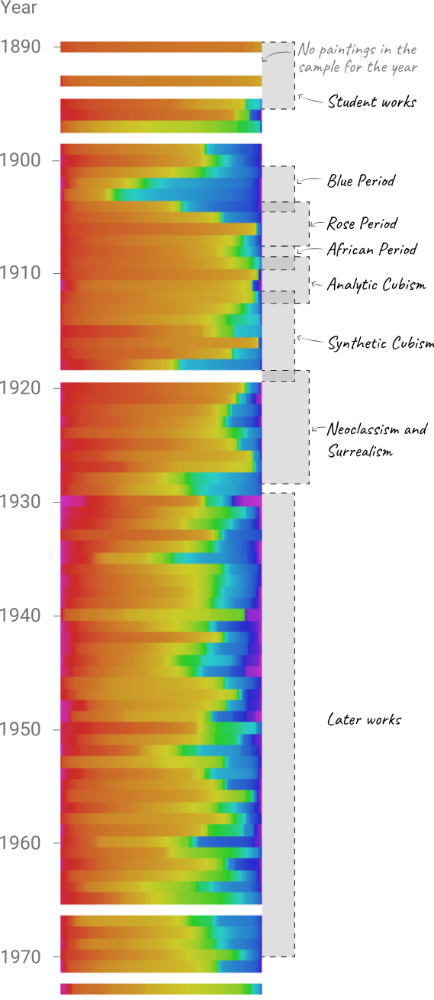

An overview of Pablo Picasso's use of color in his career
Pablo Ruiz Picasso (25 October 1881 – 8 April 1973) was a Spanish painter, sculptor, printmaker, ceramicist, stage designer, poet and playwright who spent most of his adult life in France. Regarded as one of the most influential artists of the 20th century, he is known for co-founding the Cubist movement, the invention of constructed sculpture, the co-invention of collage, and for the wide variety of styles that he helped develop and explore. Among his most famous works are the proto-Cubist Les Demoiselles d'Avignon (1907), and Guernica (1937), a dramatic portrayal of the bombing of Guernica by the German and Italian airforces during the Spanish Civil War.
Picasso's work is often categorized into periods. While the names of many of his later periods are debated, the most commonly accepted periods in his work are the Blue Period (1900–1904), the Rose Period (1904–1906), the African-influenced Period (1907–1909),
Picasso has the ranks highest among painters in Google searches.
Scholars classify Picasso's art into distinct periods.
Some periods of Picasso's life are characterized by distinct use of color. Two of these periods are the Blue Period (1900–1904), and the Rose Period (1904–1906). Upon randomly sampling colors from 973 paintings from his career, an average color usage for each year were generated. While there are different ways to represent color (i.e. HSV, RGB, CYMK), only the hue was considered by the pipeline.

Blue Period (1900-1904)
Picasso's Blue Period , characterized by sombre paintings rendered in shades of blue and blue-green, only occasionally warmed by other colors. By randomly sampling from each of his paintings during this period, it is apparent that his use of blue increases relative to other colors. During this period, he uses more blues relative to other colors which are cheaper to acquire i.e. browns, oranges. Aligning with the sombre theme, the canonical example of Picasso's work during the Blue Period is "The Old Guitarist" depicting an old, blind, disheveled man playing in the streets of Barcelona, Spain.
Rose Period (1904-1906)
Picasso's Rose Period follows the sombre tone of the previous arc in his life. Interestingly, art historians believe that these artistic years coincide with a period of increased personal joy and romance for Picasso. His works shifted to a more warmer pallete of colors as shown by the increased abundance of reds and oranges in these years. He shifted from the gloomy subjects that were pervasive in the previous years to painting things that are more spirited i.e. clowns, kids, and families (although Picasso didn't have the best relationship with his parents). A representative example of this period is "Garçon à la pipe" which shows a boy holding a pipe with a wreath of flowers.
Primative Period (1907-1909)
The Primative Period was short-lived and was driven by a muse that Picasso gained after visiting ethnographic museum in Paris. Picasso painted in a style which was strongly influenced by African sculpture and particularly traditional African masks. While the color usage is similar to the ones he uses for the remainder of his life, the technique of transforming the human figure into wood or stone foreshadows the style of art that he later pioneers. Additionally, his work during this period was met with public outrage leading Picasso to refrain showing some of his work publically till later in his life such as "Les Demoiselles d'Avignon" pictured below.